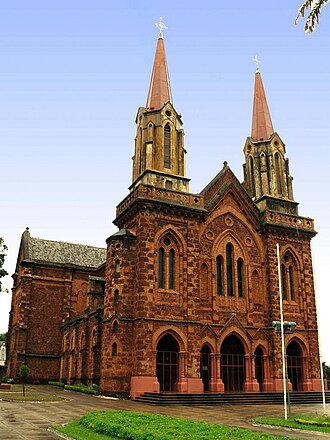

Diocese de Uberaba
De TriânguloLeaks, a enciclopédia do Triângulo Mineiro
|
 CC BY-SA Foto de terceiros, via Wikimedia Commons — consulte a página do arquivo para o nome do autor e a versão exata da licença antes de reutilizar. Sobre o licenciamento. | |
| Resumo | |
|---|---|
| Circunscrição eclesiástica da Igreja Católica criada em 1907 e elevada a arquidiocese em 1962; sediada em Uberaba, Minas Gerais. | |
| Dados | |
| Tipo | Circunscrição eclesiástica da Igreja Católica |
| Criação da diocese | |
| Primeiro bispo | Dom Eduardo Duarte Silva (posse em 1908) |
| Elevação a arquidiocese | 1962 |
| Catedral | Catedral Metropolitana de Uberaba |
| Sede | Uberaba, Minas Gerais |

A Diocese de Uberaba foi criada em pelo papa Pio X, com sede em Uberaba. Seu primeiro bispo, Dom Eduardo Duarte Silva, tomou posse em . Em 1962, 55 anos após sua criação, a circunscrição foi elevada pelo papa João XXIII à condição de arquidiocese metropolitana, tornando-se sede de uma província eclesiástica — razão pela qual hoje é oficialmente conhecida como Arquidiocese de Uberaba.[1][2]
Criação da diocese [editar]
Dom Eduardo Duarte Silva chegou à região em 1896 e, em 1902, solicitou à Santa Sé a criação de uma diocese com sede em Uberaba. O pedido foi atendido em , após a construção de uma catedral de concreto armado no Alto das Mercês, no local da antiga Igreja da Adoração Perpétua. Dom Eduardo tomou posse oficialmente em e permaneceu à frente da diocese até 1923.[1][2]
Elevação a arquidiocese [editar]
Em 1962, o papa João XXIII elevou a Diocese de Uberaba à condição de arquidiocese metropolitana, tornando-a sede de uma província eclesiástica que hoje reúne, como dioceses sufragâneas, as de Patos de Minas, Uberlândia e Ituiutaba. A Arquidiocese de Uberaba abrange atualmente dezenas de paróquias distribuídas por municípios do Triângulo Mineiro e do Alto Paranaíba.[2]
Localização [editar]
Local principal ou mencionado neste artigo: Catedral Metropolitana de Uberaba, Uberaba, Minas Gerais.
Ver também
Genealogia das pessoas citadas
Pessoas citadas neste artigo (1)
Cada nome abaixo aparece no texto deste artigo e tem parentes registrados no banco do site; abra para ver a ascendência.
Dom Eduardo Duarte Silva (1852–1924) filho(a) de Carlos Duarte Silva e Maria Leopoldina Marques Guimarães
Abrir em Especial:Genealogia · Pesquisa avançada (filtros de genealogia)
Referências
- ↑ Jornal de Manhã (JM Online). "Diocese de Uberaba faz 110 anos e missa na Catedral marca a data" — usado para a criação da diocese (1907), a trajetória de Dom Eduardo Duarte Silva e a posse em 1908. jmonline.com.br.
- ↑ Arquidiocese de Uberaba. "História" — usado para a elevação a arquidiocese em 1962 e a estrutura eclesiástica atual. arquidiocesedeuberaba.org.br/historia.